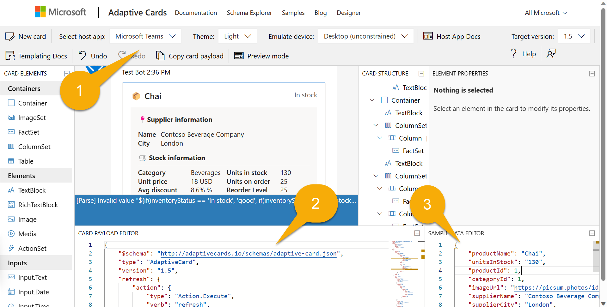

Lab M1 - Get to know Northwind message extension
In this lab, you’ll run the Northwind message extension, your base app. The initial exercises will make you familiar with the source code. Finally, you’ll run the application in Teams.
Navigating the Extend Teams Message Extension labs (Extend Path)
In this lab you will:
- Do a quick code tour of the Northwind Message extension
- Run the application on Teams
Exercise 1 - Code tour
Let's examine the code in the base app called Northwind.
Step 1 - Examine the manifest
The core of any Microsoft 365 application is its application manifest. This is where you provide the information Microsoft 365 needs to access your application.
In your working directory called Northwind from previous lab , open the manifest.json file in the appPackage folder. This JSON file is placed in a zip archive with icon files to create the application package. The "icons" property includes paths to these icons.
"icons": {
"color": "Northwind-Logo3-192-${{TEAMSFX_ENV}}.png",
"outline": "Northwind-Logo3-32.png"
},
Notice the token ${{TEAMSFX_ENV}} in one of the icon names. Agents Toolkit will replace this token with your environment name, such as "local" or "dev" (for an Azure deployment in development). Thus, the icon color will change depending on the environment.
Now have a look at the "name" and "description". Notice that the description is quite long! This is important so both users and Copilot can learn what your application does and when to use it.
"name": {
"short": "Northwind Inventory",
"full": "Northwind Inventory App"
},
"description": {
"short": "App allows you to find and update product inventory information",
"full": "Northwind Inventory is the ultimate tool for managing your product inventory. With its intuitive interface and powerful features, you'll be able to easily find your products by name, category, inventory status, and supplier city. You can also update inventory information with the app. \n\n **Why Choose Northwind Inventory:** \n\n Northwind Inventory is the perfect solution for businesses of all sizes that need to keep track of their inventory. Whether you're a small business owner or a large corporation, Northwind Inventory can help you stay on top of your inventory management needs. \n\n **Features and Benefits:** \n\n - Easy Product Search through Microsoft Copilot. Simply start by saying, 'Find northwind dairy products that are low on stock' \r - Real-Time Inventory Updates: Keep track of inventory levels in real-time and update them as needed \r - User-Friendly Interface: Northwind Inventory's intuitive interface makes it easy to navigate and use \n\n **Availability:** \n\n To use Northwind Inventory, you'll need an active Microsoft 365 account . Ensure that your administrator enables the app for your Microsoft 365 account."
},
Scroll down a bit to "composeExtensions". Compose extension is the historical term for message extension; this is where the app's message extensions are defined.
Within this is a bot, with the ID supplied by Agents Toolkit.
"composeExtensions": [
{
"botId": "${{BOT_ID}}",
"commands": [
{
...
Message extensions communicate using the Azure Bot Framework; this provides a fast and secure communication channel between Microsoft 365 and your application. When you first ran your project, Agents Toolkit registered a bot, and will place its bot ID here.
This message extension has two commands, which are defined in the commands array. Let's pick one command and see the structure.
{
"id": "discountSearch",
"context": [
"compose",
"commandBox"
],
"description": "Search for discounted products by category",
"title": "Discounts",
"type": "query",
"parameters": [
{
"name": "categoryName",
"title": "Category name",
"description": "Enter the category to find discounted products",
"inputType": "text"
}
]
},
This allows user to search for discounted products within a Northwind category. This command accepts a single parameter, "categoryName".
OK now let's move back to the first command, "inventorySearch". It has 5 parameters, which allows for much more sophisticated queries.
{
"id": "inventorySearch",
"context": [
"compose",
"commandBox"
],
"description": "Search products by name, category, inventory status, supplier location, stock level",
"title": "Product inventory",
"type": "query",
"parameters": [
{
"name": "productName",
"title": "Product name",
"description": "Enter a product name here",
"inputType": "text"
},
{
"name": "categoryName",
"title": "Category name",
"description": "Enter the category of the product",
"inputType": "text"
},
{
"name": "inventoryStatus",
"title": "Inventory status",
"description": "Enter what status of the product inventory. Possible values are 'in stock', 'low stock', 'on order', or 'out of stock'",
"inputType": "text"
},
{
"name": "supplierCity",
"title": "Supplier city",
"description": "Enter the supplier city of product",
"inputType": "text"
},
{
"name": "stockQuery",
"title": "Stock level",
"description": "Enter a range of integers such as 0-42 or 100- (for >100 items). Only use if you need an exact numeric range.",
"inputType": "text"
}
]
},
Step 2 - Examine the "Bot" code
Now open the file searchApp.ts in folder src in the root folder. This application contains the "bot" code, which communicates with the Azure Bot Framework using the Bot Builder SDK.
Notice that the bot extends an SDK class TeamsActivityHandler.
export class SearchApp extends TeamsActivityHandler {
constructor() {
super();
}
...
By overriding the methods of the TeamsActivityHandler, the application is able to handle messages (called "activities") coming from Microsoft 365.
The first of these is a Messaging Extension Query activity ("messaging extension" is another historical name for a message extension). This function is called when a user types into a message extension or when Copilot calls it.
// Handle search message extension
public async handleTeamsMessagingExtensionQuery(
context: TurnContext,
query: MessagingExtensionQuery
): Promise<MessagingExtensionResponse> {
switch (query.commandId) {
case productSearchCommand.COMMAND_ID: {
return productSearchCommand.handleTeamsMessagingExtensionQuery(context, query);
}
case discountedSearchCommand.COMMAND_ID: {
return discountedSearchCommand.handleTeamsMessagingExtensionQuery(context, query);
}
}
}
All it's doing is dispatching the query to the based on the command ID. These are the same command ID's used in the manifest above.
The other type of activity our app needs to handle is the adaptive card actions, such as when a user clicks on "Update stock" or "Reorder" on an adaptive card. Since there is no specific method for an adaptive card action, the code overrides onInvokeActivity(), which is a much broader class of activity that includes message extension queries. For that reason, the code manually checks the activity name, and dispatches to the appropriate handler. If the activity name isn't for an adaptive card action, the else clause runs the base implementation of onInvokeActivity() which, among other things, will call our handleTeamsMessagingExtensionQuery() method if the Invoke activity is a query.
import {
TeamsActivityHandler,
TurnContext,
MessagingExtensionQuery,
MessagingExtensionResponse,
InvokeResponse
} from "botbuilder";
import productSearchCommand from "./messageExtensions/productSearchCommand";
import discountedSearchCommand from "./messageExtensions/discountSearchCommand";
import revenueSearchCommand from "./messageExtensions/revenueSearchCommand";
import actionHandler from "./adaptiveCards/cardHandler";
export class SearchApp extends TeamsActivityHandler {
constructor() {
super();
}
// Handle search message extension
public async handleTeamsMessagingExtensionQuery(
context: TurnContext,
query: MessagingExtensionQuery
): Promise<MessagingExtensionResponse> {
switch (query.commandId) {
case productSearchCommand.COMMAND_ID: {
return productSearchCommand.handleTeamsMessagingExtensionQuery(context, query);
}
case discountedSearchCommand.COMMAND_ID: {
return discountedSearchCommand.handleTeamsMessagingExtensionQuery(context, query);
}
}
}
// Handle adaptive card actions
public async onInvokeActivity(context: TurnContext): Promise<InvokeResponse> {
let runEvents = true;
// console.log (`üé¨ Invoke activity received: ${context.activity.name}`);
try {
if(context.activity.name==='adaptiveCard/action'){
switch (context.activity.value.action.verb) {
case 'ok': {
return actionHandler.handleTeamsCardActionUpdateStock(context);
}
case 'restock': {
return actionHandler.handleTeamsCardActionRestock(context);
}
case 'cancel': {
return actionHandler.handleTeamsCardActionCancelRestock(context);
}
default:
runEvents = false;
return super.onInvokeActivity(context);
}
} else {
runEvents = false;
return super.onInvokeActivity(context);
}
} ...
Step 3 - Examine the message extension command code
In an effort to make the code more modular, readable, and reusable, each message extension command has been placed in its own TypeScript module. Have a look at src/messageExtensions/discountSearchCommand.ts as an example.
First, note that the module exports a constant COMMAND_ID, which contains the same command ID found in the app manifest, and allows the switch statement in searchApp.ts to work properly.
Then it provides a function, handleTeamsMessagingExtensionQuery(), to handle incoming queries for discounted products by category.
async function handleTeamsMessagingExtensionQuery(
context: TurnContext,
query: MessagingExtensionQuery
): Promise<MessagingExtensionResponse> {
// Seek the parameter by name, don't assume it's in element 0 of the array
let categoryName = cleanupParam(query.parameters.find((element) => element.name === "categoryName")?.value);
console.log(`üí∞ Discount query #${++queryCount}: Discounted products with categoryName=${categoryName}`);
const products = await getDiscountedProductsByCategory(categoryName);
console.log(`Found ${products.length} products in the Northwind database`)
const attachments = [];
products.forEach((product) => {
const preview = CardFactory.heroCard(product.ProductName,
`Avg discount ${product.AverageDiscount}%<br />Supplied by ${product.SupplierName} of ${product.SupplierCity}`,
[product.ImageUrl]);
const resultCard = cardHandler.getEditCard(product);
const attachment = { ...resultCard, preview };
attachments.push(attachment);
});
return {
composeExtension: {
type: "result",
attachmentLayout: "list",
attachments: attachments,
},
};
}
Notice that the index in the query.parameters array may not correspond to the parameter's position in the manifest. While this is generally only an issue for a multi-parameter command, the code will still get the value based on the parameter name rather than hard coding an index.
After cleaning up the parameter (trimming it, and handling the fact that sometimes Copilot assumes "*" is a wildcard that matches everything), the code calls the Northwind data access layer to getDiscountedProductsByCategory().
Then it iterates through the products and creates two cards for each:
- a preview card, which is implemented as a "hero" card (these predate adaptive cards and are very simple). This is what's displayed in the search results in the user interface and in some citations in Copilot.
- a result card, which is implemented as an "adaptive" card that includes all the details.
In the next step, we'll review the adaptive card code and check out the Adaptive Card designer.
Step 4 - Examine the adaptive cards and related code
The project's adaptive cards are in the src/adaptiveCards folder. There are 3 cards, each implemented as a JSON file.
- editCard.json - This is the initial card that's displayed by the message extension or a Copilot reference
- successCard.json - When a user takes action, this card is displayed to indicate success. It's mostly the same as the edit card except it includes a message to the user.
- errorCard.json - If an action fails, this card is displayed.
Let's take a look at the edit card in the Adaptive Card Designer. Open your web browser to https://adaptivecards.io and click the "Designer" option at the top.

Notice the data binding expressions such as "text": "üì¶ ${productName}",. This binds the productName property in the data to the text on the card.
Now select "Microsoft Teams" as the host application 1️⃣ . Paste the entire contents of editCard.json into the Card Payload Editor 2️⃣ , and the contents of sampleData.json into the Sample Data Editor 3️⃣ . The sample data is identical to a product as provided in the code.

You should see the card as rendered, except for a small error which arises due to the designer's inability to display one of the adaptive card formats.
Near the top of the page, try changing the Theme and Emulated Device to see how the card would look in dark theme or on a mobile device. This is the tool that was used to build adaptive cards for the sample application.
Now, back in Visual Studio Code, open cardHandler.ts. The function getEditCard() is called from each of the message extension commands to obtain a result card. The code reads the adaptive card JSON - which is considered a template - and then binds it to product data. The result is more JSON - the same card as the template, with the data binding expressions all filled in. Finally, the CardFactory module is used to convert the final JSON into an adaptive card object for rendering.
function getEditCard(product: ProductEx): any {
var template = new ACData.Template(editCard);
var card = template.expand({
$root: {
productName: product.ProductName,
unitsInStock: product.UnitsInStock,
productId: product.ProductID,
categoryId: product.CategoryID,
imageUrl: product.ImageUrl,
supplierName: product.SupplierName,
supplierCity: product.SupplierCity,
categoryName: product.CategoryName,
inventoryStatus: product.InventoryStatus,
unitPrice: product.UnitPrice,
quantityPerUnit: product.QuantityPerUnit,
unitsOnOrder: product.UnitsOnOrder,
reorderLevel: product.ReorderLevel,
unitSales: product.UnitSales,
inventoryValue: product.InventoryValue,
revenue: product.Revenue,
averageDiscount: product.AverageDiscount
}
});
return CardFactory.adaptiveCard(card);
}
Scrolling down, you'll see the handler for each of the action buttons on the card. The card submits data when an action button is clicked - specifically data.txtStock, which is the "Quantity" input box on the card, and data.productId, which is sent in each card action to let the code know what product to update.
async function handleTeamsCardActionUpdateStock(context: TurnContext) {
const request = context.activity.value;
const data = request.action.data;
console.log(`üé¨ Handling update stock action, quantity=${data.txtStock}`);
if (data.txtStock && data.productId) {
const product = await getProductEx(data.productId);
product.UnitsInStock = Number(data.txtStock);
await updateProduct(product);
var template = new ACData.Template(successCard);
var card = template.expand({
$root: {
productName: product.ProductName,
unitsInStock: product.UnitsInStock,
productId: product.ProductID,
categoryId: product.CategoryID,
imageUrl: product.ImageUrl,
...
As you can see, the code obtains these two values, updates the database, and then sends a new card that contains a message and the updated data.
Exercise 2 - Run the sample as a Message Extension
Step 1 - Set up the project for first use
Open your working folder in Visual Studio Code. If you have already opened it for the code tour, you can continue from there.
Agents Toolkit stores environment variables in the env folder, and it will fill in all the values automatically when you start your project the first time. However there's one value that's specific to the sample application, and that's the connection string for accessing the Northwind database.
In this project, the Northwind database is stored in Azure Table Storage; when you're debugging locally, it uses the Azurite storage emulator. That's mostly built into the project, but the project won't build unless you provide the connection string.
The necessary setting is provided in a file env/.env.local.user.sample. Make a copy of this file in the env folder, and call it .env.local.user. This is where secret or sensitive settings are stored.
If you're not sure how to do this, here are the steps in Visual Studio Code. Expand the env folder and right click on .env.local.user.sample. Select "Copy". Then right click anywhere in the env folder and select "Paste". You will have a new file called .env.local.user copy.sample. Use the same context menu to rename the file to .env.local.user and you're done.

The resulting .env.local.user file should contain this line:
SECRET_STORAGE_ACCOUNT_CONNECTION_STRING=UseDevelopmentStorage=true
(OK it's not a secret! But it could be; if you deploy the project to Azure it will be!)
Step 2 - Run the application locally
Click F5 to start debugging, or click the start button 1️⃣. You will have an opportunity to select a debugging profile; select Debug in Teams (Edge) 2️⃣ or choose another profile.

If you see this screen, you need to fix your env/.env.local.user file; this is explained in the previous step.

The first time your app runs, you may be prompted to allow NodeJS to go through your firewall; this is necessary to allow the application to communicate.
It may take a while the first time as it's loading all the npm packages. Eventually, a browser window will open and invite you to log in.
The debugging will open teams in a browser window. Make sure you login using the same credentials you signed into Agents Toolkit. Once you're in, Microsoft Teams should open up and display a dialog offering to open your application.

Once opened it immediately ask you where you want to open the app in. By default it's personal chat. You could also select it in a channel or group chat as shown. Select "Open".

Now you are in a personal chat with the app.
Step 3 - Test in Microsoft Teams
To test the app on the teams, select the "+" sign in the chat message compose area. And select "+ Get more apps" button to open the dialog to search apps. Choose "Northwind Inventory" app with a blue background. See the process below.

Once the app is opened from the compose area, you will see a search box in the default tab "Products Inventory". You will also find the "Discount" search tab greyed out. Continue searching for a product, type in "Chai" which is a product available in Northwind database to see if the item is displayed as shown below.

You can select the card for Chai and send it in the conversation.
You could also test the button actions in the adaptive card as demonstrated below.

This will confirm that the message extension is working and ready to be used as a plugin, which we will see in the next lab.
NOTE: This is really only useful in conversations with other users; the chat in the Northwind Inventory app is just for testing.
Step 4 - Advanced queries
Back in Visual Studio Code, have a look at the app manifest, which is in a file called manifest.json in the appPackage directory. You'll notice that the app information that was displayed when you installed the app is all here.
Scroll down a bit to composeExtensions:.
Compose extensions is the historical name for a message extension; the Northwind Inventory message extension is defined here.
Here's an abbreviated version of that JSON for easy reference.
"composeExtensions": [
{
"botId": "${{BOT_ID}}",
"commands": [
{
"id": "inventorySearch",
...
"description": "Search products by name, category, inventory status, supplier location, stock level",
"title": "Product inventory",
"type": "query",
"parameters": [ ... ]
},
{
"id": "discountSearch",
...
"description": "Search for discounted products by category",
"title": "Discounts",
"type": "query",
"parameters": [ ...]
}
]
}
],
Notice first that there's a bot ID. That's because Microsoft Teams uses the Azure bot channel to exchange secure, real-time messages with your application. Agents Toolkit will register the bot and fill in the ID for you.
Then there's a collection of commands. These correspond to the tabs in the search dialog in Teams. In this application, the commands are really intended for Copilot more than regular users!
You already ran the first command when you searched for a product by name. You can try the other one now.
Enter "Beverages", "Dairy", or "Produce" into the "Discounts" tab, and you'll see the products within those categories that are discounted. Copilot will use this to answer questions about discounted products.

Now examine the first command again. You'll notice it has 5 parameters!
"parameters": [
{
"name": "productName",
"title": "Product name",
"description": "Enter a product name here",
"inputType": "text"
},
{
"name": "categoryName",
"title": "Category name",
"description": "Enter the category of the product",
"inputType": "text"
},
{
"name": "inventoryStatus",
"title": "Inventory status",
"description": "Enter what status of the product inventory. Possible values are 'in stock', 'low stock', 'on order', or 'out of stock'",
"inputType": "text"
},
{
"name": "supplierCity",
"title": "Supplier city",
"description": "Enter the supplier city of product",
"inputType": "text"
},
{
"name": "stockQuery",
"title": "Stock level",
"description": "Enter a range of integers such as 0-42 or 100- (for >100 items). Only use if you need an exact numeric range.",
"inputType": "text"
}
]
Unfortunately, Teams can only display the first parameter, but Copilot can use all 5. This will allow it to do more advanced queries of the Northwind inventory data.
As a work-around to the Teams UI limitation, in the "Northwind Inventory" tab, the application will accept up to 5 parameters comma separated, using the format:
name,category,inventoryStatus,supplierCity,supplierName

Read the descriptions in the JSON above carefully when entering a query. Try entering these, and as you do, keep an eye on the debug console tab in Visual Studio Code, where you'll see each query as it's run.
- "chai" - find products with names that begin with "chai
- "c,bev" - find products in categories beginning with "bev" and names that begin with "c
- ",,out" - find products that are out of stock
- ",,on,london" - find products that are on order from suppliers in London
- "tofu,produce,,osaka" - find products in the "produce" category with suppliers in Osaka and names that begin with "tofu"
Each query term filters the list of products down. The format of each query term is arbitrary - just be sure to explain it to Copilot in the description of each parameter.
Step 6 (optional) - View Northwind database in Azure Storage Explorer
The Northwind Database isn't fancy but it's real! If you want to peek at or even modify the data, open the Azure Storage Explorer while Azurite is running.
Note
Running the app starts Azurite automatically. For more information check the Azurite documention here. As long as your project is started successfully you can view the storage.
To view the Northwind data, open "Emulator & Attached", "Storage Accounts", "Emulator - Default Ports", and "Tables". There you'll see the old Northwind database tables, which aren't nearly as handy in a NO SQL environment, but there they are!

The code reads the Products table on each query, but the other tables are only accessed when the app starts. So if you want to add a new category, you'll need to restart the app for it to appear.
Congratulations
You have mastered running the Northwind message extension. Now it's time to test it as plugin in Microsoft 365 Copilot in the next lab. Select Next.